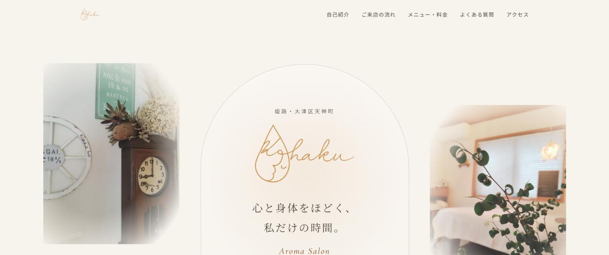
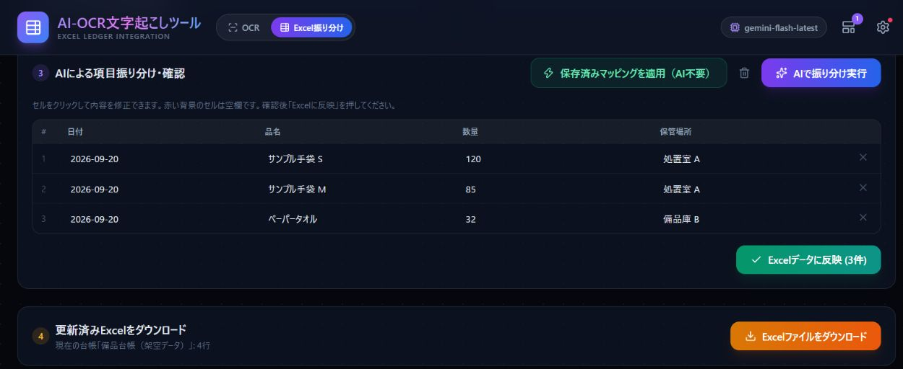
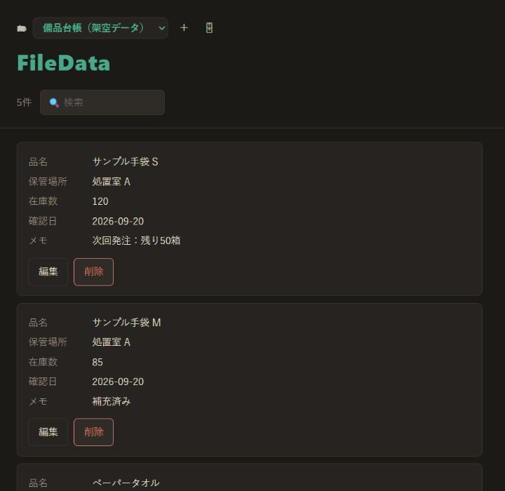

ホームページ制作
スマホで見やすい店舗・事業サイト。メニューや写真、文章をご自身で直せる管理画面つきにも対応します。
お渡しするものサイト一式（公開まで）、必要に応じて更新用の管理画面、操作メモ
WEB × LINE × AI
ホームページ・予約システム・LINE公式／Lステップ・Threads・AIツールまで。 ひとりの担当者が、設計から公開までつなげて作ります。
ご相談・お見積もりは無料。返信は2営業日以内です。個人情報の取り扱い
必要なところだけのご依頼も歓迎です。全部まとめて頼む必要はありません。
電話・DM・LINEで届く予約を、手帳やメモで管理していて漏れが心配。
→ 予約システム／LINE連携
メニューや写真を変えたくても、自分では更新できない。
→ 更新画面つきホームページ
アカウントは作ったけれど、あいさつも案内も手つかず。
→ LINE公式・Lステップ構築
転記や下調べなど、決まった作業に時間を取られている。
→ AIツール開発・業務自動化
バラバラに頼むと噛み合わない WEB・予約・LINE を、ひとつの流れとして設計します。公開と操作説明までを標準にし、その後の更新や追加もご相談いただけます。
スマホで見やすい店舗・事業サイト。メニューや写真、文章をご自身で直せる管理画面つきにも対応します。
お渡しするものサイト一式（公開まで）、必要に応じて更新用の管理画面、操作メモ
空き枠の表示から予約受付、確認メール、来店前のリマインド、メニュー・クーポン・顧客を扱う管理画面まで。
お渡しするもの予約画面と管理画面、確認・リマインドメールの設定、操作メモ
あいさつメッセージ・キーワード応答・リッチメニューの設計、Lステップとの連携、予約システムとのLINE連携（開発・テスト済み）。
お渡しするものあいさつ・自動応答・リッチメニューの設定一式、設定内容のメモ
話題の収集から投稿案づくり、言い回しのチェックまでを自動化。内容を確認・承認した投稿だけを予約投稿する、続けやすい運用の仕組みを作ります。
お渡しするもの投稿案づくりから承認・予約投稿までの仕組み、使い方の手順書
帳票の読み取りやリサーチ、文面づくりなど、毎日の決まった作業をAIで軽くするツールを作ります。
お渡しするもの合意した機能のツール、使い方の説明、サンプルデータでの動作確認
実際に手がけたものです。公開中のものは、リンク先で動きを確かめられます。

CASE 01 ／ ホームページ・予約・LINE
姫路の女性専用・完全予約制サロンの、集客と予約まわりを一式で手がけています。
CASE 02 ／ LINE
LINE公式アカウントとLステップの連携を構築しました。事業者名は伏せています。

TOOL ／ AI
紙・PDFを見ながらExcel台帳へ手で転記する作業向け。読み取り範囲を指定 → AIが文字やチェック欄を読み取ってCSVに → 項目を対応付けて台帳へ追記、の流れです。読み取り結果は人が確認して使います。
触ってみる ↗
TOOL ／ 業務
管理項目を自由に決めて、複数の台帳を一つの画面で。検索・並び替え・CSV出力・印刷に対応し、データは端末内に保存。
触ってみる ↗内容によって必要な作業が大きく変わるため、決まった金額表は置いていません。そのかわり、何で費用が変わるのか、何が別にかかるのかを先にお伝えします。
困っていることを伺い、対応できるか・どう進めるかを整理して、作業範囲・お渡しするもの・期間・費用をお見積もりでご提示します。費用が発生するのは、お見積もりにご同意いただいてからです。
どれが必要か、誰の名義・負担で契約するかは、お見積もりの際に項目を分けてご案内します。
標準に含むもの
公開と操作説明まで。ホームページ・予約・LINE・ツールを使える状態にして、使い方をご説明します。
別途お見積もり
公開後の文章や画像の差し替え、機能の追加。内容を伺ってから、その都度お見積もりします。
田代 裕貴
Nexsist 運営／臨床工学技士
2022年から臨床工学技士として、病院・透析クリニックで透析や医療機器の管理に携わってきました。患者さんのデータを1人ずつExcelへ手入力する作業に追われたことをきっかけに、現場の作業を減らすツールを自分で作り始めました。2026年からは Nexsist として、ホームページ・予約・LINE・AIの仕組みづくりをお手伝いしています。
大切にしているのは、今の作業の手順に合わせることです。作る前に「どの作業を、どう変えたいか」を一緒に整理し、途中の画面を見ていただきながら使いやすい形に調整します。
お客様困っている作業や、今の状況を伝える
こちら対応できるか、追加で確かめたいことをお返事
お客様範囲と費用を確認する
こちら作業範囲・お渡しするもの・期間・費用、別途かかる費用
お客様試作を触って、気になる点を伝える
こちら動く画面、変更点、確認してほしいこと
お客様実際に使ってみる
こちら公開と操作の説明（ここまでが標準）
費用が発生するのは、02 のお見積もりにご同意いただいてからです。
はい。専門用語を前提にせず、実際に使う場面に合わせてご説明します。「何を頼めばいいか分からない」段階のご相談も歓迎です。
ご相談とお見積もりは無料です。お見積もりにご同意いただくまで、費用は発生しません。
できるだけ今のものを活かす形で考えます。すでにあるツールやスプレッドシートの調整だけのご相談にも対応します。
内容によります。サーバーやLINE・Lステップ・AIなど外部サービスの料金がかかる場合は、お見積もりの際に項目と負担先を分けてお伝えします。
標準の範囲は公開と操作説明までです。文章や画像の差し替え、機能の追加は、内容を伺ってから別途お見積もりします。ホームページは、ご自身で直せる更新画面をつけることもできます。
ご相談・お見積もりは無料です。2営業日以内にご返信します。「まだ何を頼めばいいか分からない」段階でも大丈夫です。
いちばん気軽な窓口です。今の状況をひとこと送ってください。業種と、困っている作業がわかるとスムーズです。
LINE公式アカウントを開くLINEでいただいた内容も、個人情報の取り扱いのとおりに扱います。
LINE・フォームのどちらからのご相談も、Nexsist（運営：田代裕貴）が受け取ります。いただいたお名前・連絡先・相談内容は、ご相談への返信と、その後のご提案・お見積もり・制作のやりとりのためだけに使い、法令に基づく場合を除いて第三者には提供しません。フォームの内容は、運営者のGoogleアカウントの表計算シートに保存され、通知メールで運営者に届きます。記録の削除をご希望の場合は、LINEまたはフォームからお知らせください。